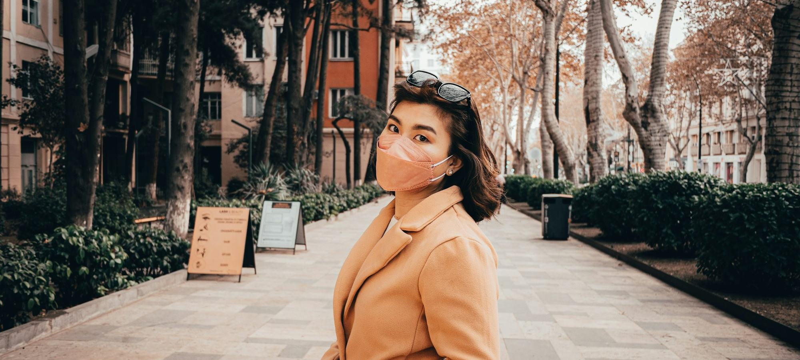
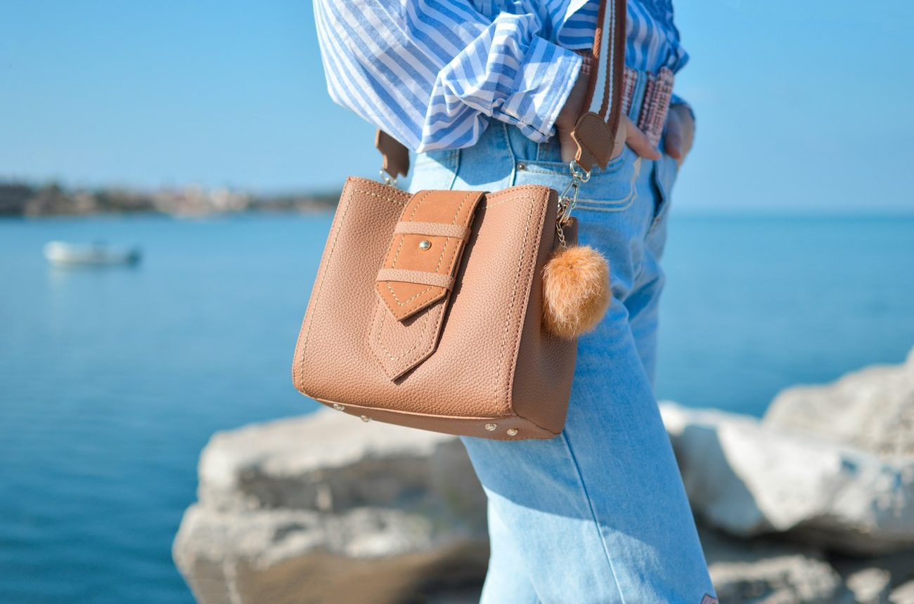
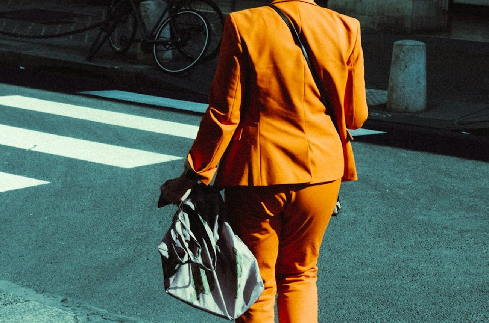
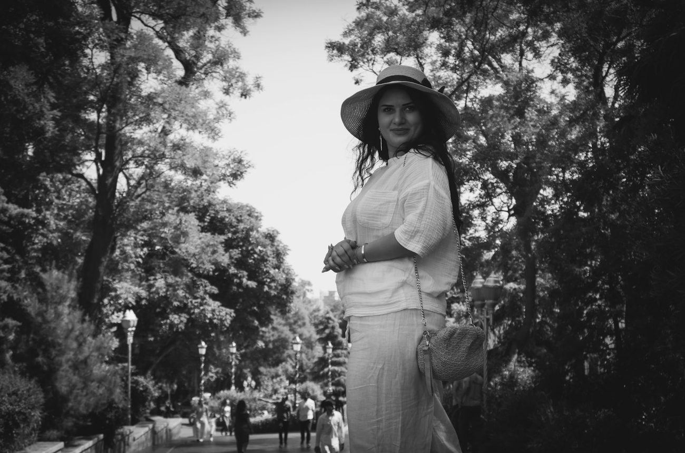

Quelles sont les meilleures marques de sacs français en 2026 ?
Douze maisons françaises de maroquinerie comparées sur leur modèle phare, leurs matières, l'origine qu'elles affichent et leur fourchette de prix, de 125 à 890 €.

Porté épaule, bandoulière, hobo ou panier d'été. Nous relevons l'origine du cuir, les finitions et les prix, nous portons les sacs une semaine, puis nous classons les marques.

Douze maisons françaises de maroquinerie comparées sur leur modèle phare, leurs matières, l'origine qu'elles affichent et leur fourchette de prix, de 125 à 890 €.




Douze maisons françaises de maroquinerie comparées sur leur modèle phare, leurs matières, l'origine qu'elles affichent et leur fourchette de prix, de 125 à 890 €.
Neuf sacs porté épaule en cuir comparés, de 350 à 490 €, portés une semaine chacun avec le même contenu.
Neuf sacs de travail pour femme testés avec le même contenu, un ordinateur 14 pouces, un dossier A4, une trousse et une gourde, de 135 à 680 €.
Dix ans, c'est la durée de vie normale d'un sac en cuir pleine fleur bien tenu, et beaucoup n'en font que trois.
Huit sacs en raphia comparés chez huit maisons françaises, du tote à 135 € au cabas crocheté à 590 €.

Le mot « cuir » sur une étiquette couvre aussi bien une peau pleine fleur de 1,2 mm qu'une croûte enduite de polyuréthane.
Note globale sur 10 sur le seul univers sacs à main, mise à jour le 16 octobre 2026. La qualité du cuir et l'origine de fabrication pèsent 45 % de la note. Notes et prix, relevé de démonstration.
Voir la méthode de notation


Comparez deux marques de sacs sur nos cinq critères en un clic.
Sur nos relevés d'octobre 2026, Vanessa Bruno arrive en tête de l'univers sacs (8,6/10) avec la gamme la plus complète, du cabas au Moon. Polène suit à 8,3/10 sur la qualité du cuir et Longchamp à 8,1/10 sur la durabilité.
Chez les marques premium françaises, un sac en cuir de vachette pleine fleur se situe entre 300 et 500 €. En dessous de 200 €, le cuir est souvent refendu ou enduit.
Un cabas L ou un sac de 40 cm de large au moins, avec une fermeture zippée et des anses de 22 cm et plus pour le porter à l'épaule par-dessus un manteau.
Le raphia naturel se porte de mai à septembre. Les versions mêlées de cuir ou de lurex prolongent la saison jusqu'en octobre.
Cinq critères sur 10, cuir et matières, finitions, praticité, prix et service, pondérés dans une note globale. Relevé de démonstration d'octobre 2026, prix des sites officiels.
Un email le vendredi, le classement de la semaine, les nouveaux comparatifs et les pièces qui reviennent en stock.
Un email par semaine, désinscription en un clic.